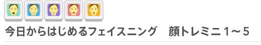
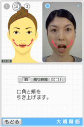
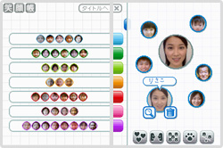
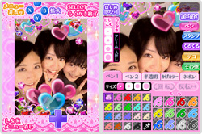
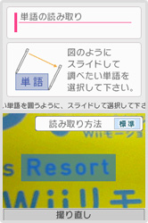

DSiウェアの中には、新たに搭載されたカメラの機能を活用して、さまざまな楽しみ方や便利な機能を利用できるものもたくさんあります。ここでは顔の表情を記録して美容に役立てたり、みんなの顔写真を集めたり、英単語をカメラで認識して意味を調べたり……そんなソフトをご紹介します。


お好みのコースを選んでフェイスニング
普段あまり意識することがない、顔の内側にある筋肉をトレーニングするためのソフトのシリーズです。「すっきり小顔コース」「ステキな笑顔コース」「若々しい顔コース」「目と口の健康コース」「顔のリフレッシュコース」という5本があり、それぞれに「フェイスニング」と呼ばれる3種類の顔の筋肉のトレーニングのほか、顔にまつわるお得な美容と健康のための情報などを収録しています。
下画面にある「毎日フェイスニング」を選択して、指示にしたがって体全体のウォーミングアップからスタート。その後、お手本通りに顔の筋肉を動かしていきます。きちんと動かせているかは、DSiのカメラが顔を取り込んで判定してくれます。
フェイスニングのほかに、定期的に「表情測定」を行って、どのくらいお手本通りに顔の筋肉を動かせるようになっているかを測定し、パーセントとランクで結果をカレンダーに保存できます。また、毎日1枚ずつ自分の顔写真を撮影して、トレーニングによって顔の表情が変化してきているかどうかを確認することも可能です。
トレーニングを続けていると、その達成度によって、画面中にあらわれるキャラクター「カオヒコ」のカツラやアクセサリーを入手でき、毎日のフェイスニングの合間にカオヒコの着せ替えを楽しむといった遊び要素も用意されています。
©2007-2009 Nintendo ©2007-2009 Fumiko Inudo
Co-developed by INTELLIGENT SYSTEMS


顔写真を集めて相性などをマップ化
お友達や家族の顔写真を撮影して集め、それぞれの顔写真を「モテ度」「もうかる度」「できる度」などといった基準で判定してくれるソフトです。また、選んだ顔写真の人と他の人の顔写真の「今日のお顔相性度」や「そっくり指数」のほか、「ゴージャス⇔シンプル」、「大人っぽい⇔子供っぽい」、「きっちり⇔おおざっぱ」などの基準で顔写真を散りばめたマップを楽しむこともできます。
顔写真は最大で80人分まで保存でき、カメラに写した瞬間の顔で手軽に相性診断を行うことも可能です。
その他にも、その人の顔を動物にたとえるとどのタイプに近いかがひと目でわかる「どうぶつマップ」や、2人の顔写真を合成して、その2人の子供はどんな顔になるかシミュレーションできる「ふたりの子顔」といった機能も収録しています。
家族みんなが集まるホームパーティや、お友達とゲームで一緒に遊んでいる時などに、このソフトで顔写真を集めて表示させれば、話のネタになりそうですね。
©2009 Nintendo Co-developed by INTELLIGENT SYSTEMS

DSiでプリクラをたっぷり楽しむ
DSiのカメラとタッチペンを使って、撮影した写真をプリクラ風にデコレーションして楽しめるソフトです。フレームや背景（人ウラ）、落書きをするペンの色や太さ、スタンプや髪の色を変える機能などなど、本当にたくさんのデコレーション用ツールが用意されていますので、自分だけの楽しい写真を簡単に作ることができます。
もちろん、自分撮りや友達を写すだけでなく、タイマーを使ってみんなで一緒の写真も撮れます。撮影した写真は「myプリ帳」に保存しておけばすぐにコピーができますし、あとから何度でも編集が可能なのがうれしいところ。DSワイヤレス通信を使えば、このソフトを持っているお友達なら同時に最大3人まで、自分が作った写真を送ることができます。
さらに、SDメモリーカードに写真を保存すれば、携帯電話やパソコンでも写真を見たり、メールで友達に送ったり、プリントアウトしたりと、作った写真の活用範囲も大いに広げることができるでしょう。
©2009 Nintendo / ATLUS 「プリクラ®」は、株式会社アトラスの登録商標です。

写真から文字を読み取り可能
ひとつの単語を入力すると、まとめて一気に日本語、英語、フランス語、ドイツ語、スペイン語、イタリア語の6ヶ国の言語に同時翻訳してくれるという辞書ソフトです。基本的な単語に加えて、特に日常生活でよく使う単語を含めた約15,000語を収録しています。
単語の入力は、画面に表示されるキーボードをタッチする、手書きで画面に文字を書いて入力といった、おなじみの方法のほか、DSiのカメラで撮影した写真の中にある文字を自動的に読み取ることができるのが大きな特徴となっています。旅先のレストランのメニューや看板などを撮影して、そのまますぐに翻訳するという使い方が可能です。
もちろん、入力する単語は日本語以外でも、対応している6ヶ国語ならどの言語からでも翻訳することができます。語学の学習に、海外の新聞や雑誌を読む際に、たんに日本語での意味を知るだけでなく、同じ意味の他の国の言語を眺めてみると、思いもかけない発見があるでしょう。
©2009 Nintendo Co-Developed by INTELLIGENT SYSTEMS
©Sanseido Co., Ltd. 2009